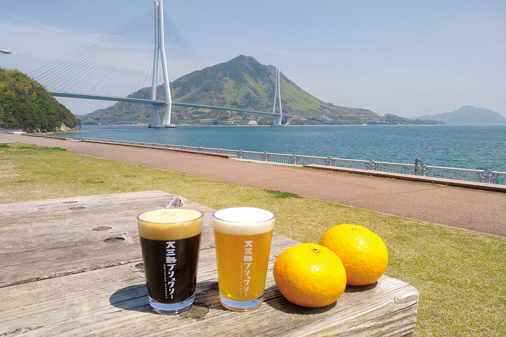
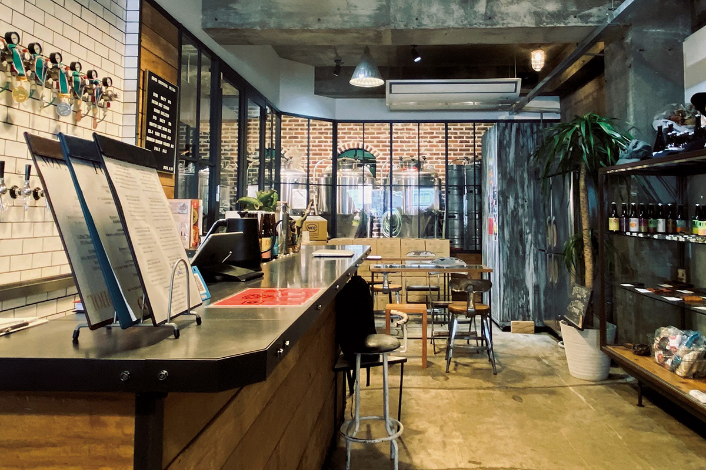
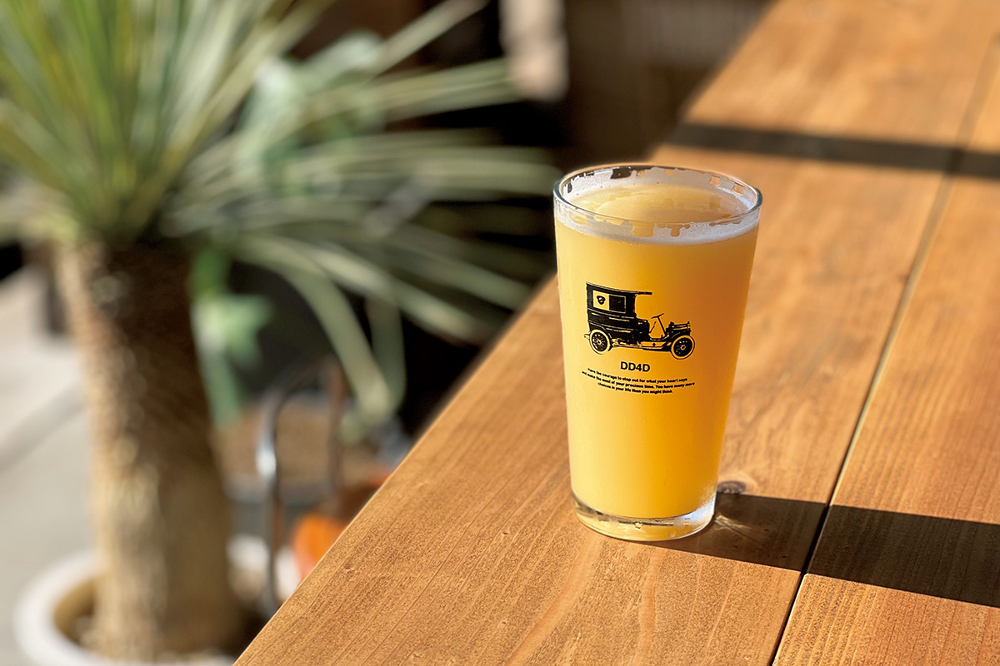
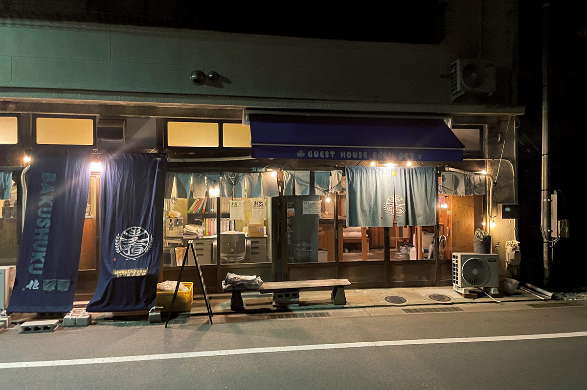
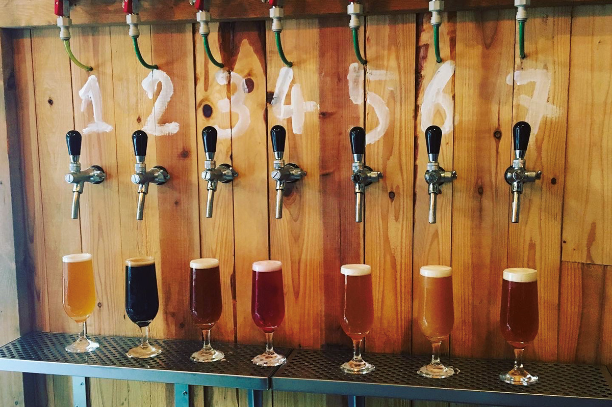

Префектура Эхимэ · Мацуяма, Имабари, Омисима · напитки
Шесть пивоварен Эхимэ: маршрут по крафтовому пиву от Мацуямы до Омисимы

В Эхимэ крафтовое пиво варят и у старейшего онсэна, и в магазине одежды, и на острове посреди Внутреннего моря. Собрали шесть мест, куда стоит заглянуть за бокалом.
Маршрут
Два дня от Мацуямы до Омисимы
Наш рассказчик, знаток крафтового пива, объехал больше четырёхсот пивоварен и баров и советует начинать с Мацуямы: отсюда путь идёт через Имабари на остров Омисима. Формально это два дня, но каждую остановку можно растянуть на целый вечер.
Мацуяма
Четыре остановки в городе
«Дого бакусюкан»
Первую остановку делают у Дого. Тапрум «Дого бакусюкан» принадлежит пивоварне «Дого биру», которая варит пиво с 1996 года, и стоит напротив главной купальни Дого, так что после ванны здесь пьют пиво. Сегодня тапрум носит имя «Дого биру бар». Заказать стоит кёльш, который местные называют «пивом Боттяна».
«Дого биру бар»
- Адрес
- префектура Эхимэ, Мацуяма, Дого-Юнотё, 20-13
- Телефон
- +81 89-945-6866
- Часы работы
- 11:00–22:00
- Выходные
- нет
DD4D BREWING & CLOTHING STORE
Второе место в центре Мацуямы необычно уже само по себе: это магазин одежды, в котором с мая 2019 года варят пиво. Здесь продают вещи без привязки к жанрам и категориям, а рядом работает бар: за стеклом видны бродильные танки, и пиво наливают прямо из них.

В пиво добавляют иёнкан, халапеньо, перец сансё и даже кордицепс, поэтому вкусы получаются самыми неожиданными.

DD4D BREWING & CLOTHING STORE
- Адрес
- префектура Эхимэ, Мацуяма, Тифунэмати, 4-2-6, здание DD4D, 1-й этаж
- Телефон
- +81 89-932-7764
- Часы работы
- 11:00–20:00 (последний заказ в 19:30), по пятницам и субботам до 21:00
- Выходные
- среда
- Сайт
- japandemic.co.jp
DD4D FACTORY & CURIOSITIES
Третья точка того же проекта это второй завод, заработавший в ноябре 2021 года в портовом районе Мицухама. Здесь стоят танки, вмещающие до 2400 литров, и по выходным открывается тапрум, где пиво можно выпить на месте. Пивоварня делает сочные сорта с иёнканом из Эхимэ и уже посматривает за границу.
DD4D FACTORY & CURIOSITIES
- Адрес
- префектура Эхимэ, Мацуяма, Сумиёси, 2-12-19
- Телефон
- +81 89-932-7764
- Часы работы
- 11:00–17:30, тапрум открыт по субботам и воскресеньям
- Выходные
- будние дни
- Сайт
- japandemic.co.jp
«Бакусюку дэн»
Четвёртая остановка в десяти минутах ходьбы: в марте 2020 года здесь открыли хостел в перестроенном старом доме. На первом этаже тапрум и пивоварня, на втором четыре гостевые комнаты. Здесь сбывается мечта любителя пива: выпил и сразу лёг спать.

В тапруме всегда семь сортов, а в новейшем из них картофель, розмарин, лимон и много хмеля.

«Бакусюку дэн» (Guest House Brew)
- Адрес
- префектура Эхимэ, Мацуяма, Хараигава, 2-5-13
- Телефон
- +81 90-5274-1013
- Номера
- 4
- Цены
- от 7500 иен за ночь за номер (с налогом и обслуживанием)
Имабари и Омисима
Дальше по островам
«Имабари-матинака бакусю»
Пятая остановка в Имабари: пивоварня заработала в октябре 2020 года в торговом квартале. Пиво здесь наливают сами пивовары, поэтому за стойкой можно спросить о сырье и о том, как варился сорт. Одновременно в тапруме бывает до восьми сортов, есть наборы для дегустации и пиво на вынос.
«Имабари-матинака бакусю»
- Адрес
- префектура Эхимэ, Имабари, Токиватё, 3-4-13
- Телефон
- +81 898-35-4313
- Часы работы
- 15:00–21:00
- Выходные
- нерегулярные
«Омисима брювари»
Последняя точка на острове Омисима, куда идёт автобус по дороге Симанами-кайдо. Пивоварню в апреле 2018 года открыла семейная пара, и главный сорт здесь с местными цитрусами: белый эль получается фруктовым. Рядом стоят святилище Оямадзуми и гостиницы, так что здесь удобно и заночевать.
«Омисима брювари»
- Адрес
- префектура Эхимэ, Имабари, Омисима-тё Мияура, 5589
- Телефон
- +81 897-72-9248
- Часы работы
- 12:00–20:00 (последний заказ в 19:30)
- Выходные
- вторник и среда, бывают и другие
- Сайт
- omishima.beer